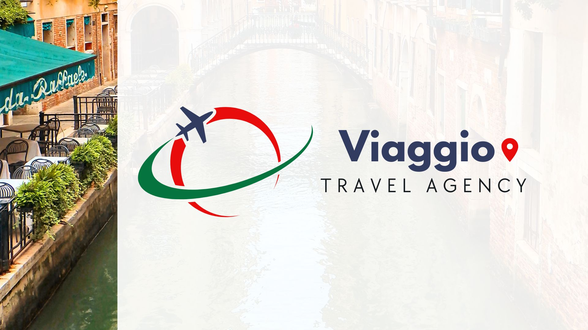
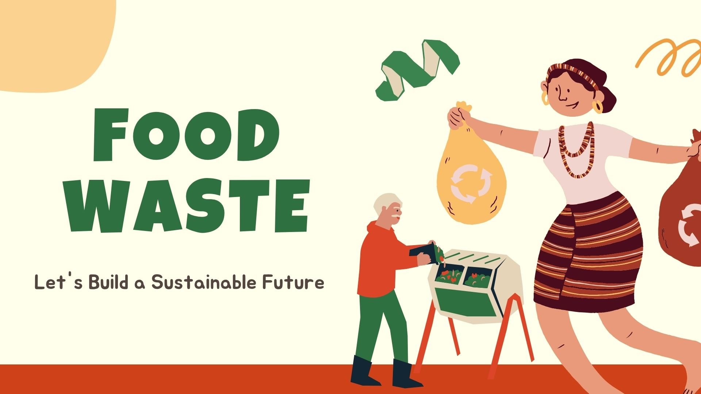
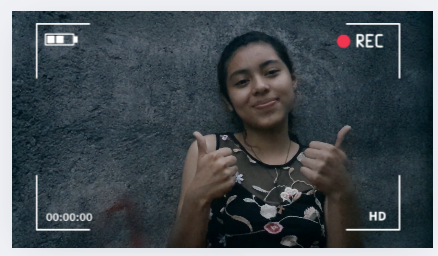
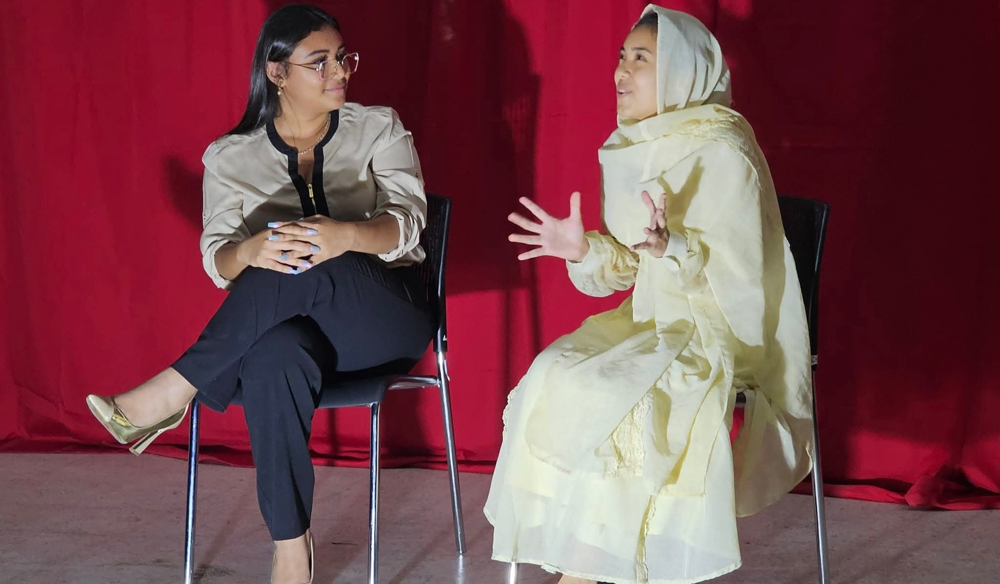
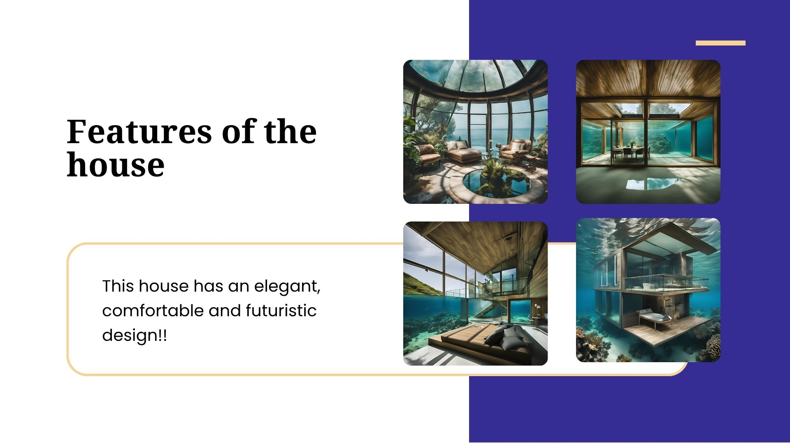
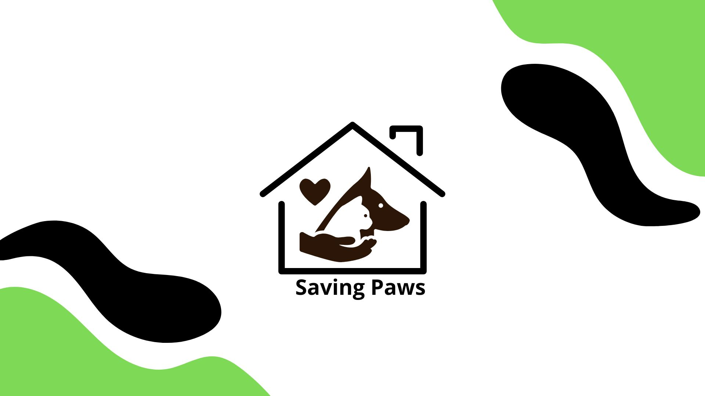
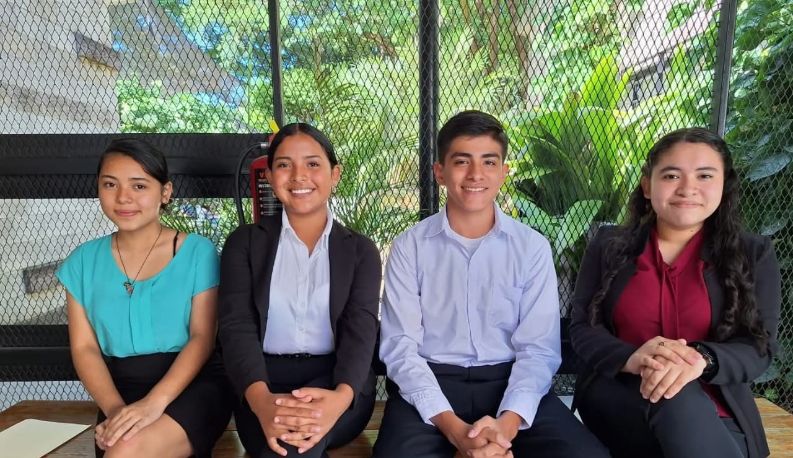
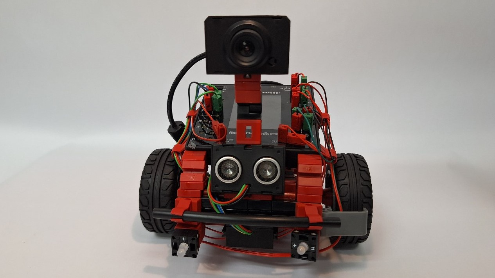
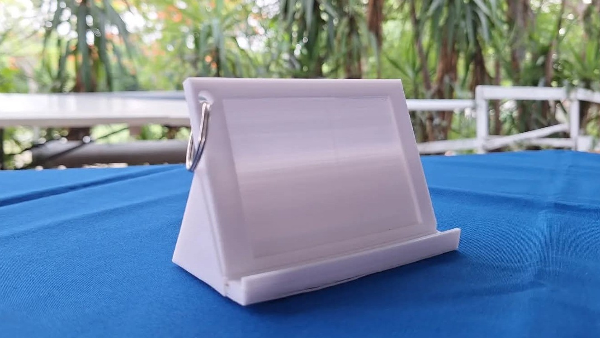

Freshman English Projects

Línea del tiempo
Compartir mi línea del tiempo en el año 2023.

Travel Agency
Agencia de viajes simulada.

Wasted Food
Consejos para reducir el desperdicio de comida.

YouTube Video
Grabamos un video para un canal de YouTube.

Holiday
Presentación del Carnaval de Italia.

JTH
Dramatización con personajes históricos.
Junior English Projects

Casa del Futuro
Con IA creamos una casa que podría existir en el futuro.

Charity
Campaña de ayuda para animales de las calles.

Essential Lesson
Desarrollo de presentación explicativa de vocabulario.

Entrevistas
Prácticas de Entrevistas laborales

Expo Logros
Uso de robótica e innovación para demostrar nuestro aprendizaje.

Device Holder
Diseño 3D funcional para sostener dispositivos.